주조기능사 (2002-10-06 기출문제)
1과목: 금속재료일반
1. 경금속에 속하지 않는 것은?
- 나트륨
- 마그네슘
- 베리륨
- 니켈
(정답률: 알수없음)

2. 조밀육방격자의 결정구조에 속하는 것은?
- α -Fe
- γ -Fe
- 상온에서의 Cu
- 상온에서의 Mg
(정답률: 알수없음)
3. 정육각기둥의 꼭지점과 위아래 면의 중심 그리고 정육각기둥의 형상을 하고 있는 6개의 정삼각기둥 중 1개 또는 삼각기둥의 중심에 1개씩의 원자가 있는 것은?
- 체심입방격자
- 면심입방격자
- 조밀육방격자
- 저심면방격자
(정답률: 알수없음)
4. 이온화 경향이 가장 큰 것은?
- Cr
- Mg
- Zn
- Cu
(정답률: 알수없음)
5. 철(Fe)의 자기변태점(℃)은?
- 358
- 423
- 768
- 1120
(정답률: 알수없음)
6. 철-탄소계 평형상태도에서 A㎝ 선은?
- δ 고용체에서 γ고용체가 석출하는 선
- γ고용체에서 시멘타이트가 석출하는 선
- α 고용체에서 펄라이트가 석출하는 선
- γ고용체에서 α 고용체가 석출하는 선
(정답률: 알수없음)
7. 철-탄소 이중 상태도(double line)에서 실선은 탄소의 어떤 상태를 나타내는 선도인가?
- 안정선도
- 준안정선도
- 불안정선도
- 미완성선도
(정답률: 알수없음)
8. 핵연료로 활용되는 금속은?
- Fe, Cu
- Si, Ta
- U, Th
- W, Pt
(정답률: 알수없음)
9. 자동차나 항공기 등의 내연기관에 사용되는 밸브용 재료로 가장 적합한 것은?
- Cr-Si계 내열강
- Ni-S계 피삭성강
- Cu-Nb계 내산성강
- Mg-W계 경화성강
(정답률: 알수없음)
10. 탄화철(Fe3C)의 금속간화합물에 있어서 C 의 원자비는?
- 15 %
- 25 %
- 45 %
- 75 %
(정답률: 알수없음)
11. 순금속과 합금에 대한 일반적 성질 중 맞는 것은?
- 열과 전기의 전도체이다.
- 전성및 연성이 나쁘다.
- 상온에서 기체이며 비결정체이다.
- 빛에 대하여 투명체이다.
(정답률: 알수없음)
12. 저탄소 저규소의 주철에 칼슘실리케이트를 접종하여 강도를 높인 주철은?
- 구상흑연주철
- 미이하나이트주철
- 펄라이트가단주철
- 흑심가단주철
(정답률: 알수없음)
13. 용융점이 가장 높은 것은?
- W
- Au
- Co
- Mg
(정답률: 알수없음)
14. 6:4 황동에 철, 망간, 니켈, 알루미늄 등을 넣어서 메지지 않으며 방식성,특히 내해수성이 강한 고강도 황동은?
- 델타메탈
- 주석황동
- 포금
- 문쯔메탈
(정답률: 알수없음)
15. 구리 합금으로 청동에 속하는 것은?
- 흑심철
- 펄라이트강
- 포금
- 엘린바
(정답률: 알수없음)
16. 굵은 일점쇄선을 사용하는 경우는?
- 인접 부분을 참고로 표시할 때
- 특수한 가공을 실시하는 부분을 표시할 때
- 가공 전후의 모양을 나타낼 때
- 기어의 피치원을 도시할 때
(정답률: 알수없음)
17. 지름이 20 mm 인 구(球)의 치수 표시로 옳은 것은?
- Sø 20
- 20 S
- R 20
- S 20 R
(정답률: 알수없음)
18. 아래 그림에 표시된 도형은 어느 단면도에 속하는가?
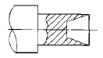
- 합성 단면도
- 계단 단면도
- 부분 단면도
- 온 단면도
(정답률: 알수없음)
19. 척도 1/2 인 제도 도면에서 실제 길이 10 mm는 몇 mm로 그려지는가?
- 5 mm
- 10 mm
- 20 mm
- 25 mm
(정답률: 알수없음)
20. 그림과 같은 겨냥도를 3각법으로 나타낼 때 우측면도는? (단, 화살표 방향이 정면도임)
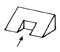
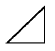
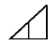
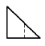
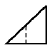
(정답률: 알수없음)
2과목: 금속제도
21. SS 330 으로 표시된 재료기호에서 330 이 뜻하는 것은?
- 재질 번호
- 재질 등급
- 탄소 함유량
- 최저 인장강도
(정답률: 알수없음)
22. 큰 도면을 접어서 보관할 경우에 기준이 되는 크기는?
- A2
- A3
- A4
- A5
(정답률: 알수없음)
23. 정투상도법에서 물체의 뒤쪽에서 바라본 형상을 도시한 투상도는?
- 저면도
- 배면도
- 평면도
- 정면도
(정답률: 알수없음)
24. 도면에서 치수 숫자와 함께 사용되는 보조기호 중 반지름을 나타내는 기호는?
- ø
- R
- C
- P
(정답률: 알수없음)
25. 제도에서 문자나 숫자, 기호 및 부호 등을 기입할 때 사용되는 용구는?
- 형판
- 문자판
- 지우개판
- 운형자
(정답률: 알수없음)
26. 나사 도시법에서 숫나사의 골지름을 나타내는 선은?
- 가는 실선
- 굵은 실선
- 가는 일점쇄선
- 가는 이점쇄선
(정답률: 알수없음)
27. 구멍과 축의 끼워맞춤에 항상 죔새가 생기는 맞춤은?
- 헐거운끼워맞춤
- 중간끼워맞춤
- 억지끼워맞춤
- 보통끼워맞춤
(정답률: 알수없음)
28. 그림과 같은 주입구를 무엇이라 하는가?
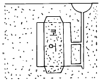
- 섹스폰 게이트
- 샤워 게이트
- 휠 게이트
- 스텝 게이트
(정답률: 알수없음)
29. 쇳물이 주형으로 낙하하는 부분의 명칭은?
- 플로우 오프
- 게이트
- 압탕
- 탕구
(정답률: 알수없음)
30. 모래,물유리,이산화탄소에 의하여 경화된 주형을 얻을 수 있는 방법은?
- 풀 몰법
- CO2법
- 쇼오법
- V-C법
(정답률: 알수없음)
31. 모래 주형을 건조했을 때의 장점은?
- 주형의 통기성이 좋아 진다.
- 점결력이 향상 된다.
- 주조품과 밀착력이 좋아 진다.
- 주형의 가축성이 좋아 진다.
(정답률: 알수없음)
32. 속이 빈 주형을 수평이나 수직으로 놓고 그 중심선을 축으로 하여 회전시키는 방법으로 쇳물을 벽면에 투사 압착 응고시켜 관이나 원통형 주물을 만드는 것은?
- 저압 주조법
- 인베스트먼트법
- 원심 주조법
- 다이 캐스트법
(정답률: 알수없음)
33. 내화도가 높고(약 1700℃)열팽률도 작으며 고망간 주강 등 고급 주물이나 온도가 높은 곳의 표면사로 사용되는 것은?
- 올리빈 샌드
- 이산화 규소
- 숯가루
- 산화철
(정답률: 알수없음)
34. 주조에 사용되는 주물사로 가장 적당한 것은?
- 삼각형
- 다각형
- 둥근형
- 편각형
(정답률: 알수없음)
35. 탕구계에서 탕구비가 1:2:3이고 탕도의단면적이 4[㎝2]일 때 탕구의 단면적은?
- 2[㎝2]
- 4[㎝2]
- 8[㎝2]
- 12[㎝2]
(정답률: 알수없음)
36. 제겔콘에 의해 측정되는 것은?
- 함유 점토량
- 내화도
- 입도 분포
- 화학 분석
(정답률: 알수없음)
37. 주물사 시험에 해당되지 않는 것은?
- 점토분 시험
- 와류시험
- 내화도 시험
- 내열성 시험
(정답률: 알수없음)
38. 점토분을 분리시킨 건조사 시료를 중량 백분율로 표시한 주물사의 입도계산 공식은?
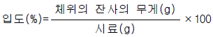
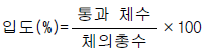
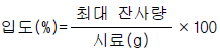
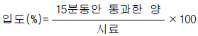
(정답률: 알수없음)
39. 주형에 쇳물을 충분히 부었으나 잘 돌지 않아서 실패하였을 때 쇳물을 잘 돌게하는 방법은?
- 압탕을 작게 한다.
- 주입온도를 높인다.
- 탕구 높이를 길게 한다.
- 탕구 바닥을 깊게 한다.
(정답률: 알수없음)
40. 탄소계 분말로 사용되지 않는 것은?
- 실리콘유
- 석탄
- 피치
- 흑연
(정답률: 알수없음)
3과목: 주조작업일반
41. 주입계통 중 가장 먼저 쇳물이 지나는 곳은?
- 피이더
- 압탕
- 탕도
- 탕구
(정답률: 알수없음)
42. 주형을 적절히 주걱끝으로 깎아 주물에 덧살을 붙이도록 하는 작업은?
- 다듬질 여유
- 치핑
- 드레프트
- 필렛트
(정답률: 알수없음)
43. 만들고자 하는 제품의 모양과 같은 모양을 가진 원형은?
- 현형
- 긁기형
- 회전형
- 혼성형
(정답률: 알수없음)
44. 모형이 소실되는 원형 주물은?
- 풀몰드법
- 바닥주형
- 틀 주형
- 금형
(정답률: 알수없음)
45. 코어(core)를 사용하는 주물은?
- 속이 빈(中空) 주물
- 크기가 큰 주물
- 외형이 복잡한 주물
- 봉(bar)모양의 주물
(정답률: 알수없음)
46. 코어메탈로 적당한 재질은?
- 나무
- 철사
- 모래
- 흑연
(정답률: 알수없음)
47. 주철용(건조형)도형제가 아닌 것은?
- 흑연가루
- 코크스가루
- 점토류
- 돌가루
(정답률: 알수없음)
48. 코어제조용으로서 유기 점결제는?
- 절점토
- 당류
- 내화점토
- 석영
(정답률: 알수없음)
49. 탄소계 보조제가 하는 일이 아닌 것은?
- 주물표면의 경화를 방지한다.
- 쇳물의 산화를 방지한다.
- 모래알의 소착을 방지한다.
- 주물사의 노화를 방지한다.
(정답률: 알수없음)
50. 탕면 모양 시험에서 규소와 탄소가 많고 비교적 산화되지 않는 좋은 용탕 모양은?
- 세엽형
- 송엽형
- 귀갑형
- 부정형
(정답률: 알수없음)
51. 망간이 많을 때의 탕면모양은?
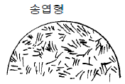
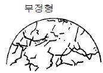
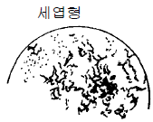
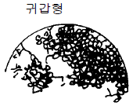
(정답률: 알수없음)
52. 큐폴라 조업 중 노내에서 가장 온도가 높은 곳은?
- 연기통 부분
- 노의 중간 부분
- 장입구 부분
- 바람구멍 부분
(정답률: 알수없음)
53. 제품의 모양과 크기에 제한이 없이 모래의 운반, 충전 다짐의 세작용을 동시에 균일하게 다질 수 있는 것은?
- 세이크 아우트 머신
- 샌드슬링거
- 자기분리기
- 기계체
(정답률: 알수없음)
54. 유기 점결제가 아닌 것은?
- 합성수지
- 벤토나이트
- 페놀수지
- 로진
(정답률: 알수없음)
55. 용선로 바닥에 물이 고일 때 가장 발생하기 쉬운 현상은?
- 풍구의 송풍량 증가
- 출탕구의 막힘
- 슬랙성분의 불균일
- 폭발
(정답률: 알수없음)
56. 주물의 응고과정에서 응력이 불균형 했을 때 주로 발생하는 결함은?
- 버클
- 스캡
- 기포
- 균열
(정답률: 알수없음)
57. 주조품의 내부 결함을 찾는데 적합한 것은?
- 액체침투 탐상
- 와류 탐상
- 형광침투 탐상
- 방사선투과 탐상
(정답률: 알수없음)
58. 주물공장내의 각종 유독가스에 대한 보호구는?
- 방진 마스크
- 방독 마스크
- 방열의
- 보호 안경
(정답률: 알수없음)
59. 주입 작업시 안전관리 사항으로 틀린 것은?
- 주형을 누르는 추의 무게는 적당해야 한다.
- 응고되기 전에 추를 내려놓지 말아야 한다.
- 주탕 후 탕구를 발로 밟는 일이 없어야 한다.
- 주물 해체 작업은 주탕 후 곧 바로 실시한다.
(정답률: 알수없음)
60. 용해 작업시 갖추어야할 복장 중 적합하지 않는 것은?
- 보안경
- 헬멧
- 가죽장갑
- 나이론류 작업복
(정답률: 알수없음)